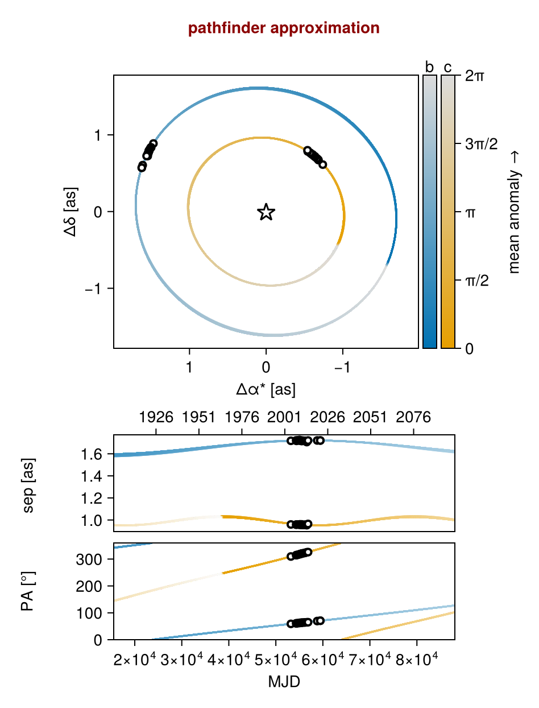
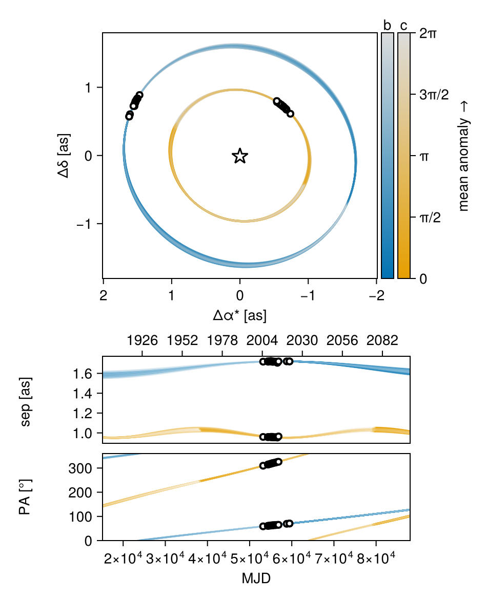
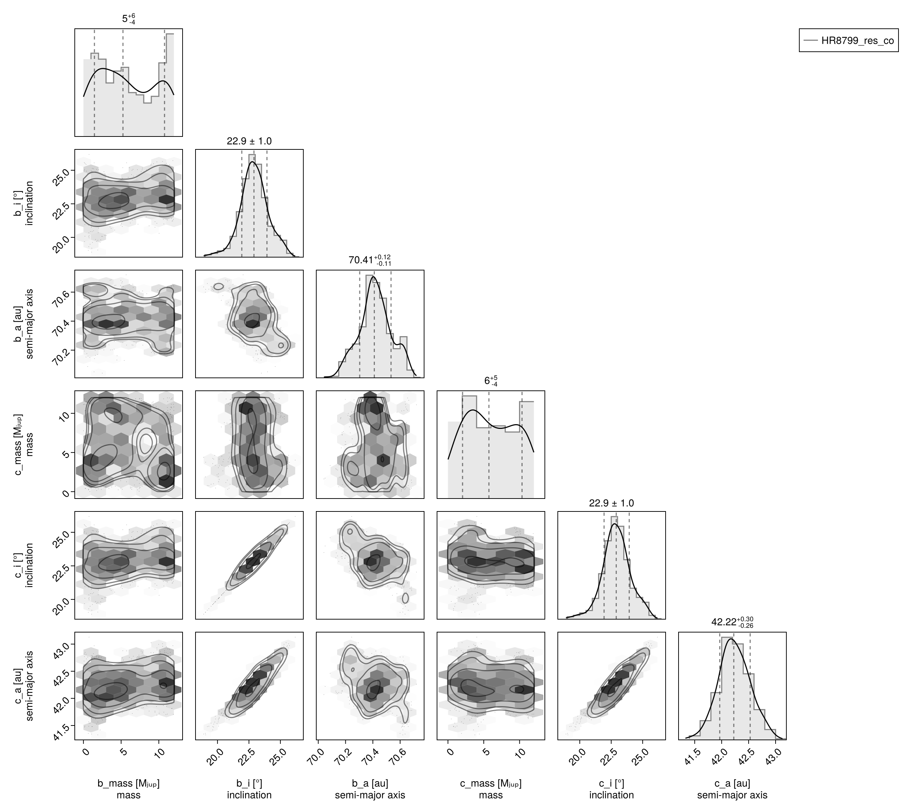
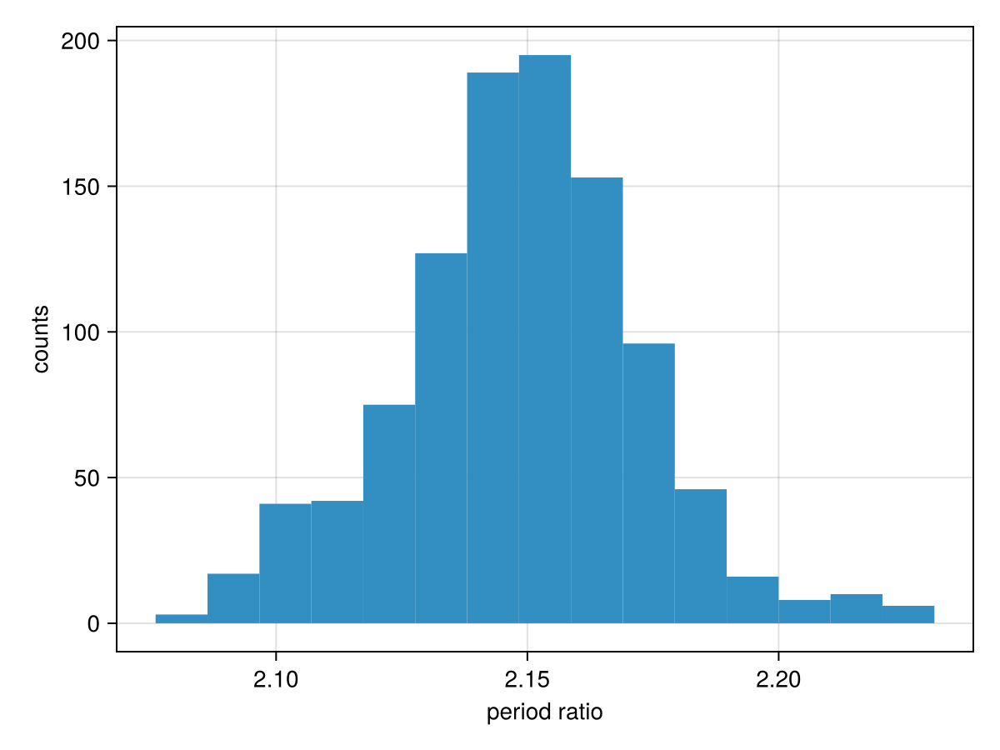
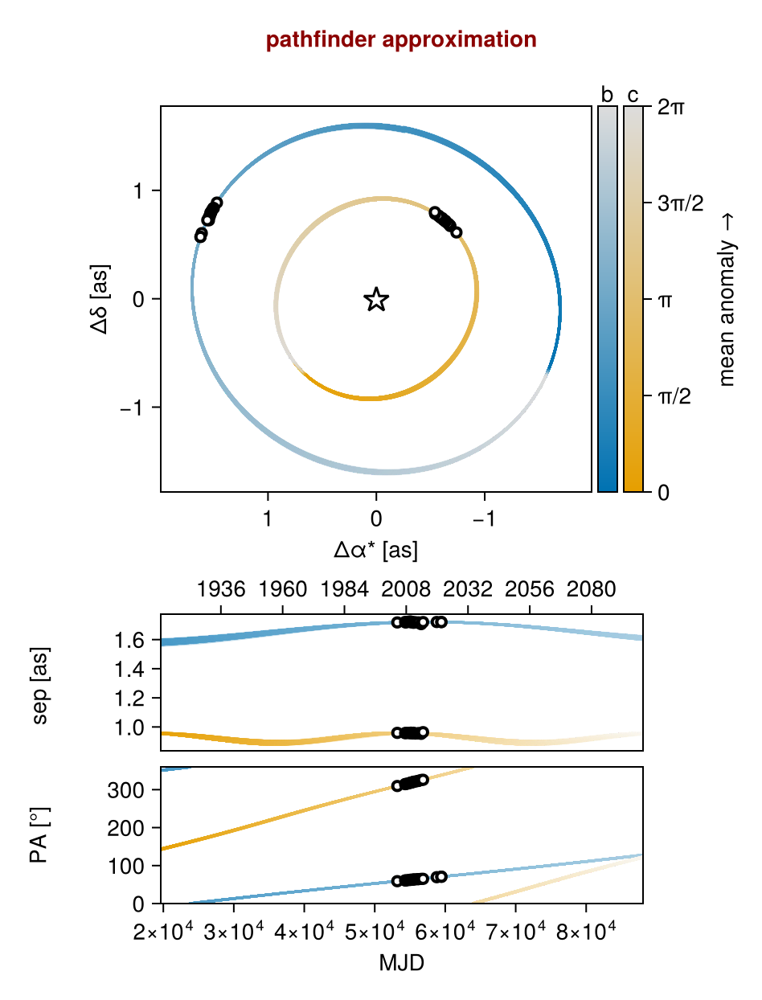
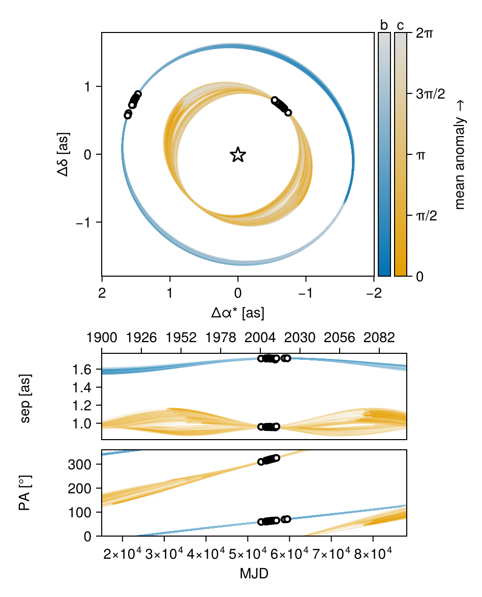
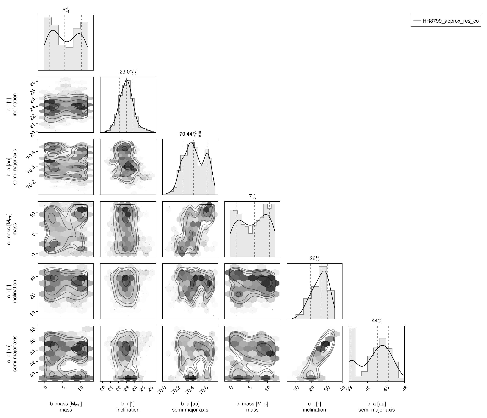
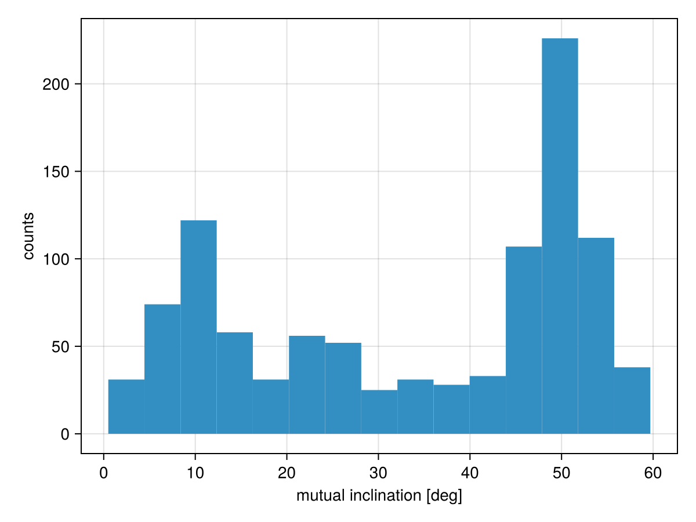

Hierarchical Co-Planar, Near-Resonant Model
This example shows how you can fit a two planet model to relative astrometry data. This functionality would work equally well with RV, images, etc.
We will demonstrate two models: the first, where the planets are exactly co-planar (using a single set of variables for the inlination and position angle of ascending node for both planets), and a second, where the planets are approximately co-planar according to a custom prior.
For this example, we will use astrometry from the HR8799 system collated by Jason Wang and retrieved from the website Whereistheplanet.com.
Data
using Octofitter
using CairoMakie
using PairPlots
using Distributions
using PlanetOrbitsastrom_dat_b = Table(;
epoch = [53200.0, 54314.0, 54398.0, 54727.0, 55042.0, 55044.0, 55136.0, 55390.0, 55499.0, 55763.0, 56130.0, 56226.0, 56581.0, 56855.0, 58798.03906, 59453.245, 59454.231],
ra = [1471.0, 1504.0, 1500.0, 1516.0, 1526.0, 1531.0, 1524.0, 1532.0, 1535.0, 1541.0, 1545.0, 1549.0, 1545.0, 1560.0, 1611.002, 1622.924, 1622.872],
dec = [887.0, 837.0, 836.0, 818.0, 797.0, 794.0, 795.0, 783.0, 766.0, 762.0, 747.0, 743.0, 724.0, 725.0, 604.893, 570.534, 571.296],
σ_ra = [6.0, 3.0, 7.0, 4.0, 4.0, 7.0, 10.0, 5.0, 15.0, 5.0, 5.0, 4.0, 22.0, 13.0, 0.133, 0.32, 0.204],
σ_dec = [6.0, 3.0, 7.0, 4.0, 4.0, 7.0, 10.0, 5.0, 15.0, 5.0, 5.0, 4.0, 22.0, 13.0, 0.199, 0.296, 0.446],
cor = [0.0, 0.0, 0.0, 0.0, 0.0, 0.0, 0.0, 0.0, 0.0, 0.0, 0.0, 0.0, 0.0, 0.0, -0.406, -0.905, -0.79]
)
astrom_dat_c = Table(;
epoch = [53200.0, 54314.0, 54398.0, 54727.0, 55042.0, 55136.0, 55390.0, 55499.0, 55763.0, 56130.0, 56226.0, 56581.0, 56855.0],
ra = [-739.0, -683.0, -678.0, -663.0, -639.0, -636.0, -619.0, -607.0, -595.0, -578.0, -572.0, -542.0, -540.0],
dec = [612.0, 671.0, 678.0, 693.0, 712.0, 720.0, 728.0, 744.0, 747.0, 761.0, 768.0, 784.0, 799.0],
σ_ra = [6.0, 4.0, 7.0, 3.0, 4.0, 9.0, 4.0, 12.0, 4.0, 5.0, 3.0, 22.0, 12.0],
σ_dec = [6.0, 4.0, 7.0, 3.0, 4.0, 9.0, 4.0, 12.0, 4.0, 5.0, 3.0, 22.0, 12.0],
cor = [0.0, 0.0, 0.0, 0.0, 0.0, 0.0, 0.0, 0.0, 0.0, 0.0, 0.0, 0.0, 0.0]
)
astrom_b = PlanetRelAstromObs(
astrom_dat_b,
name = "GPI",
variables = @variables begin
# Fixed values for this example - could be free variables:
jitter = 0 # mas [could use: jitter ~ Uniform(0, 10)]
northangle = 0 # radians [could use: northangle ~ Normal(0, deg2rad(1))]
platescale = 1 # relative [could use: platescale ~ truncated(Normal(1, 0.01), lower=0)]
end
)
astrom_c = PlanetRelAstromObs(
astrom_dat_c,
name = "GPI",
variables = @variables begin
# Fixed values for this example - could be free variables:
jitter = 0 # mas [could use: jitter ~ Uniform(0, 10)]
northangle = 0 # radians [could use: northangle ~ Normal(0, deg2rad(1))]
platescale = 1 # relative [could use: platescale ~ truncated(Normal(1, 0.01), lower=0)]
end
)
fig = scatter(astrom_b.table.ra, astrom_b.table.dec, axis=(;autolimitaspect=1))
scatter!(astrom_c.table.ra, astrom_c.table.dec)
scatter!([0], [0], marker='⋆', markersize=50, color=:black)
fig
Exact Co-Planar Model
This model will use a single pair of i and Ω variables for both planets to enforce exact co-planarity.
planet_b = Planet(
name="b",
basis=Visual{KepOrbit},
observations=[astrom_b],
variables=@variables begin
e = 0.0
ω = 0.0
M_pri = system.M_pri
M_b = system.M_b
M_c = system.M_c
M = M_pri + M_b*Octofitter.mjup2msol + M_c*Octofitter.mjup2msol
mass = M_b
# Use the system inclination and longitude of ascending node
# variables
i = system.i
Ω = system.Ω
# Specify the period as ~ 1% around 2X the P_nominal variable
P_mul ~ Normal(1, 0.1)
P_nominal = system.P_nominal
P = 2*P_nominal * P_mul
a = cbrt(M * P^2)
θ ~ UniformCircular()
tp = θ_at_epoch_to_tperi(θ, 59454.231; M, e, a, i, ω, Ω) # reference epoch for θ. Choose an MJD date near your data.
end
)
planet_c = Planet(
name="c",
basis=Visual{KepOrbit},
observations=[astrom_c],
variables=@variables begin
e = 0.0
ω = 0.0
M_pri = system.M_pri
M_b = system.M_b
M_c = system.M_c
M = M_pri + M_b*Octofitter.mjup2msol
mass = M_c
# Use the system inclination and longitude of ascending node
# variables
i = system.i
Ω = system.Ω
# Specify the period as ~ 1% the P_nominal variable
P_mul ~ truncated(Normal(1, 0.1), lower=0.1)
P_nominal = system.P_nominal
P = P_nominal * P_mul
a = cbrt(M * P^2)
θ ~ UniformCircular()
tp = θ_at_epoch_to_tperi(θ, 59454.231; M, e, a, i, ω, Ω) # reference epoch for θ. Choose an MJD date near your data.
end
)
sys = System(
name="HR8799_res_co",
companions=[planet_b, planet_c],
observations=[],
variables=@variables begin
plx ~ gaia_plx(;gaia_id=2832463659640297472)
M_pri ~ truncated(Normal(1.5, 0.02), lower=0.1)
M_b ~ Uniform(0, 12)
M_c ~ Uniform(0, 12)
# We create inclination and longitude of ascending node variables at the
# system level.
i ~ Sine()
Ω ~ UniformCircular()
# We create a nominal period of planet c variable.
P_nominal ~ Uniform(50, 300) # years
end
)
model = Octofitter.LogDensityModel(sys)LogDensityModel for System HR8799_res_co of dimension 14 and 33 epochs with fields .ℓπcallback and .∇ℓπcallback
Initialize the starting points, and confirm the data are entered correcly:
init_chain = initialize!(model, (;
plx =24.4549,
M_pri = 1.48,
M_b = 5.73,
M_c = 5.14,
P_nominal = 230,
))
octoplot(model, init_chain)
Now sample from the model using Pigeons parallel tempering:
using Pigeons
results,pt = octofit_pigeons(model, n_rounds=10);┌ Warning: This model has priors that cannot be sampled IID.
└ @ OctofitterPigeonsExt ~/octo-maintenance/runner/actions-runner/_work/Octofitter.jl/Octofitter.jl/ext/OctofitterPigeonsExt/OctofitterPigeonsExt.jl:110
[ Info: Sampler running with multiple threads : true
[ Info: Likelihood evaluated with multiple threads: false
────────────────────────────────────────────────────────────────────────────────────────────────────────────────────────
scans restarts Λ Λ_var time(s) allc(B) log(Z₁/Z₀) min(α) mean(α) min(αₑ) mean(αₑ)
────────── ────────── ────────── ────────── ────────── ────────── ────────── ────────── ────────── ────────── ──────────
2 0 2.21 2.83 0.789 9.86e+06 -2.9e+07 0 0.837 1 1
4 0 4.59 5.22 0.426 1.43e+05 -3.84e+05 0 0.683 1 1
8 0 6.45 6.82 0.852 2.44e+05 -1.48e+05 0 0.572 1 1
16 0 7.05 6.45 1.65 3.81e+05 -7.57e+04 0 0.565 1 1
32 0 7.24 8.03 3.29 6.14e+05 -3.28e+03 0 0.507 1 1
64 0 8.29 5.97 6.48 7.71e+07 -215 0 0.54 1 1
128 2 8.74 6.56 12.7 1.32e+08 -209 8.71e-314 0.506 1 1
256 4 9.08 7.19 25 2.64e+08 -207 1.84e-137 0.475 1 1
512 4 9.81 7.84 50.6 5.19e+08 -205 3.48e-51 0.431 1 1
1.02e+03 12 9.95 8.16 100 1.03e+09 -205 1.89e-06 0.416 1 1
────────────────────────────────────────────────────────────────────────────────────────────────────────────────────────Plots the orbits:
octoplot(model, results)
Corner plot:
octocorner(model, results, small=true)
Now examine the period ratio:
hist(
results[:b_P][:] ./ results[:c_P][:],
axis=(;
xlabel="period ratio",
ylabel="counts",
)
)
Approximately Co-Planar Model
We now set up two planets with their own separate i and Ω variables, calculate the mutual inclination, and add a prior that this mutual inclination is $0 \pm 10 \degree$.
planet_b = Planet(
name="b",
basis=Visual{KepOrbit},
observations=[astrom_b],
variables=@variables begin
e = 0.0
ω = 0.0
M_pri = system.M_pri
M_b = system.M_b
M_c = system.M_c
M = M_pri + M_b*Octofitter.mjup2msol + M_c*Octofitter.mjup2msol
mass = M_b
# Use the system inclination and longitude of ascending node
# variables
i = system.i_b
Ω = system.Ω_b
# Specify the period as ~ 1% around 2X the P_nominal variable
P_mul ~ Normal(1, 0.1)
P_nominal = system.P_nominal
P = 2*P_nominal * P_mul
a = cbrt(M * P^2)
θ ~ UniformCircular()
tp = θ_at_epoch_to_tperi(θ, 59454.231; M, e, a, i, ω, Ω) # reference epoch for θ. Choose an MJD date near your data.
end
)
planet_c = Planet(
name="c",
basis=Visual{KepOrbit},
observations=[astrom_c],
variables=@variables begin
e = 0.0
ω = 0.0
M_pri = system.M_pri
M_b = system.M_b
M_c = system.M_c
M = M_pri + M_b*Octofitter.mjup2msol
mass = M_c
# Use the system inclination and longitude of ascending node
# variables
i = system.i_c
Ω = system.Ω_c
# Specify the period as ~ 1% the P_nominal variable
P_mul ~ truncated(Normal(1, 0.1), lower=0.1)
P_nominal = system.P_nominal
P = P_nominal * P_mul
a = cbrt(M * P^2)
θ ~ UniformCircular()
tp = θ_at_epoch_to_tperi(θ, 59454.231; M, e, a, i, ω, Ω) # reference epoch for θ. Choose an MJD date near your data.
end
)
sys = System(
name="HR8799_approx_res_co",
companions=[planet_b, planet_c],
observations=[],
variables=@variables begin
plx ~ gaia_plx(;gaia_id=2832463659640297472)
M_pri ~ truncated(Normal(1.5, 0.02), lower=0.1)
M_b ~ Uniform(0, 12)
M_c ~ Uniform(0, 12)
# We create inclination and longitude of ascending node variables at the
# system level.
i_b ~ Sine()
Ω_b ~ UniformCircular()
i_c ~ Sine()
Ω_c ~ UniformCircular()
# Calculate the mutual inclination
mut_inc_b_c = acos(
cos(i_b) * cos(i_c) +
sin(i_b) * sin(i_c) * cos(Ω_b - Ω_c)
)
# Add a prior on the mutual inclination
mut_inc_b_c ~ truncated(Normal(0, 10), lower=0)
# We create a nominal period of planet c variable.
P_nominal ~ Uniform(50, 300) # years
end
)
model = Octofitter.LogDensityModel(sys)LogDensityModel for System HR8799_approx_res_co of dimension 17 and 35 epochs with fields .ℓπcallback and .∇ℓπcallback
Initialize the starting points, and confirm the data are entered correcly:
init_chain = initialize!(model, (;
plx =24.4549,
M_pri = 1.48,
M_b = 5.73,
M_c = 5.14,
P_nominal = 230,
))
octoplot(model, init_chain)
Now sample from the model using Pigeons parallel tempering:
using Pigeons
results,pt = octofit_pigeons(model, n_rounds=10);┌ Warning: This model has priors that cannot be sampled IID.
└ @ OctofitterPigeonsExt ~/octo-maintenance/runner/actions-runner/_work/Octofitter.jl/Octofitter.jl/ext/OctofitterPigeonsExt/OctofitterPigeonsExt.jl:110
[ Info: Sampler running with multiple threads : true
[ Info: Likelihood evaluated with multiple threads: false
────────────────────────────────────────────────────────────────────────────────────────────────────────────────────────
scans restarts Λ Λ_var time(s) allc(B) log(Z₁/Z₀) min(α) mean(α) min(αₑ) mean(αₑ)
────────── ────────── ────────── ────────── ────────── ────────── ────────── ────────── ────────── ────────── ──────────
2 0 2.64 3.65 1.07 9.85e+06 -2.01e+06 0 0.797 1 1
4 0 5.02 5.27 0.576 1.34e+05 -7.45e+06 0 0.668 1 1
8 0 6.17 6.61 1.11 2.4e+05 -7.24e+05 0 0.588 1 1
16 0 7.54 6.61 2.19 3.86e+05 -7.21e+04 0 0.543 1 1
32 0 8.5 7.94 4.11 5.86e+05 -3.57e+04 0 0.47 1 1
64 0 9.27 7.08 8.46 8.79e+07 -205 1.49e-163 0.473 1 1
128 1 9.25 7.91 17.2 1.54e+08 -213 1.3e-74 0.446 1 1
256 2 9.88 8.32 31.6 3.02e+08 -212 5.67e-78 0.413 1 1
512 1 10.2 8.71 62.6 6e+08 -211 6.61e-15 0.39 1 1
1.02e+03 11 10.5 9.02 124 1.19e+09 -210 1.03e-22 0.371 1 1
────────────────────────────────────────────────────────────────────────────────────────────────────────────────────────Plots the orbits:
octoplot(model, results)
Corner plot:
octocorner(model, results, small=true)
Now examine the mutual inclination:
hist(
rad2deg.( results[:mut_inc_b_c][:] ),
axis=(;
xlabel="mutual inclination [deg]",
ylabel="counts",
)
)